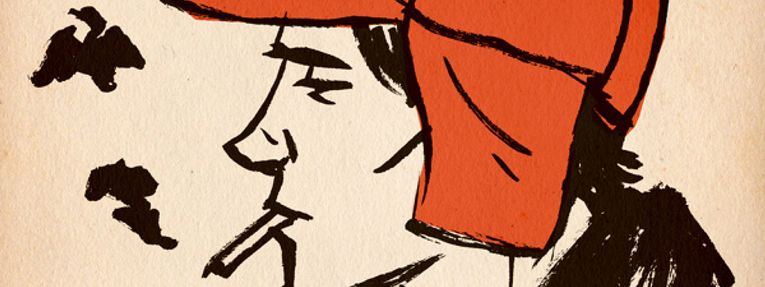
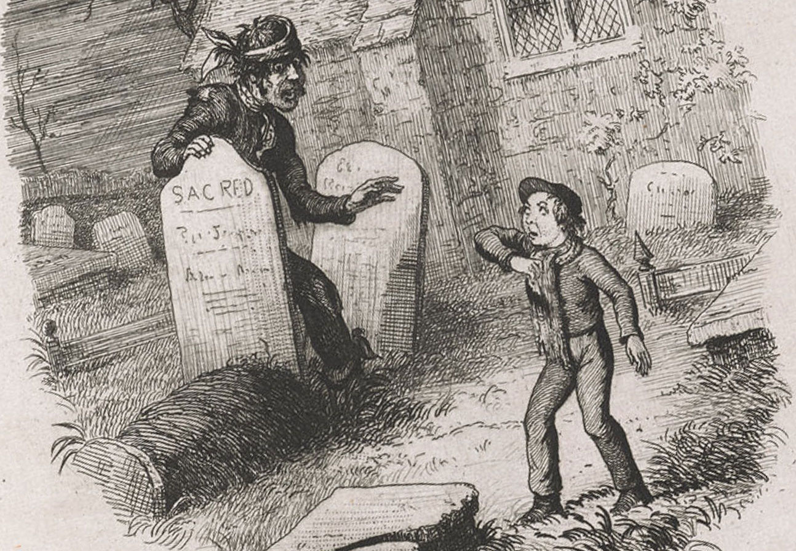

Creating character:
The Catcher in the Rye
J. D. Salinger’s fictive character Holden Caulfield has become “an icon for teenage rebellion and angst” and is considered “among the most important characters of 20th-century American literature,” according to Wikipedia.
Why? Let’s see how he was created.
But first, a very short summary of The Catcher in the Rye:
17-year-old Holden Caulfield details two days of his life from when he was 16. He’s expelled from prep. school; and being young, confused and curious, he heads to New York in search of truth. He reflects, comments, and rants about the different situations he encounters during these two days.
The story ends with Holden promising his ten-year-old sister, Phoebe, he in fact won’t leave her and the family, after just earlier having told her he would.
This shows Holden’s growth. Throughout the story, he’s bitter and cynical to everything and everyone. But in the end, he realizes that he misses many of his earlier acquaintances, including Ackley and Stradlater (his roommates) and Mr. Antolini (his teacher).
Storywise, The Catcher in the Rye is thus a coming-of-age novel. It depicts Holden’s experiences and growth from the age of 16 to 17.
Creating a cynical character
Throughout the novel, Holden describes his experiences, relations, and thoughts with distinctively judgmental language and phrases. This is apparent with particularly three phrases: “That killed me,” “I really was,” and “If you want to know the truth.”
These three phrases appear constantly throughout the novel:
He said the play itself was no masterpiece, but that the Lunts, of course, were absolute angels. Angels. For Chrissake. Angels. That killed me. … I was all set to puke when it was time to go sit down again. I really was.
“That killed me” and “I really was” allow the author to further describe Holden’s feelings and thoughts. Salinger presents the reader with a hyperbole—in this case, “I was all set to puke.” He then expands on this literary device by adding “I really was.” “That killed me” has the same effect, as it too underscores Holden’s views. (Yet it is, uniquely, also a hyperbole in and of itself.)
These phrases therefore augment the author’s hyperboles. In turn, these hyperboles describe Holden by demonstrating his thoughts and reactions.
“If you want to know the truth,” on the other hand, shows Holden being judgmental to himself, as opposed to his surroundings. This is especially obvious in chapter 13: “If you want to know the truth, I’m a virgin. I really am”.
The passage reveals that the character is ashamed of his virginity, as Holden says, “If you want to know,” as in “If you actually want to know—because this is embarrassing.” Thus, this phrase depicts Holden’s self-bitterness and insecurity.
Creating a subjective story
There’s more to analyze from chapter 17’s excerpt: “He said the play itself was no masterpiece, but that the Lunts, of course, were absolute angels. Angels. For Chrissake. Angels.”
First: Salinger italicizes words. Reading the excerpt, we naturally put emphasis on itself and angels, as type set in italic (or bold) contrasts regular roman letters.
We’ll call this visual emphasis, as opposed to emphasis achieved through clever wording (i.e., figures of speech & literary devices). Because for further emphasis, Salinger combines these two approaches.
Particularly obvious is his heavy use of repetition and periods: “[They] were absolute angels. Angels. For Chrissake. Angels.” In this tiny eight-word snippet, Salinger has put four periods. This “forces” us to read slower, with more emphasis allotted to each word. The result? We get to truly feel Holden’s hostility toward the label Angels.
Furthermore, Salinger frequently uses contractions and swearing. The former concerns replacements like shouldn’t’ve and wouldn’t’ve in place of “should not have” and “would not have.” The latter concerns phrases like “For Chrissake.”
Contractions and swearing are a casual, verbal way of self-expression (though swearing to a much higher degree) that give the reader the impression that Holden is telling a story, as opposed to just reporting past events. This accentuates the fact that The Catcher in the Rye is Holden’s story—told subjectively and casually.
Depicting subjective interpretations
The word buzz—as in the phrase “To give someone a buzz”—appears repeatedly throughout The Catcher in the Rye. Buzz is slang for “phone call,” and often serves to naturally progress the story—a way for Holden to encounter other characters.
It does, however, also trigger inner monologues:
While I was changing my shirt, I damn near gave my kid sister Phoebe a buzz, though. … Somebody with sense and all. But I couldn’t take a chance on giving her a buzz, because she was only a little kid and she wouldn’t have been up, let alone anywhere near the phone. I thought of maybe hanging up if my parents answered, but that wouldn’t’ve worked, either. They’d known it was me. My mother always knows it’s me. She’s psychic. But I certainly wouldn’t have minded shooting the crap with old Phoebe for a while.
Holden’s relation to his sister as well as his mother are revealed. His sister is “intelligent”; his mother is a “psychic.”
In addition to demonstrating character relations, this inner monologue augments future events by building suspense and enabling foreshadowing. Throughout Holden’s trip in New York, we anticipate his eventual encounter with his family (i.e., his mother). Yet this never happens, which, due to the suspense and foreshadowing, confuses and surprises us.
And by the way—is the choice of the word buzz over simply phone call just a product of slang? I argue it’s not. Throughout Holden’s journey, it’s quite clear that the word has a deeper symbolic meaning.
It could, for example, represent that Holden “gets’ a buzz” from “giving other people a buzz”. It could also allude to the sound an insect makes, symbolizing that Holden’s constant appetite for conversation annoys his companions.
Buzz nevertheless demonstrates Holden’s complex relations to his companions.
Different centuries—different styles?
The Catcher in the Rye’s qualities—its judgmental, exaggerated, and unconventional language and style—is not exclusive to 20th century literature. Delving deeper, we can in fact see that authors from way back have embraced this style.
For example: Charles Dickens. Although his 1860s classic Great Expectations is a part of the realism movement as it confronts societal issues among different social classes—unlike The Catcher in the Rye, which is arguably more modernistic as it focuses on the inner feelings and emotions of one individual—the novel is in many ways comparable to Salinger’s.
Most obvious is the way Dickens creates emphasis through visual changes to words. Just like Salinger, he italicizes them:
“What’ll I do with it? What’ll he do with it? I’ll do as much with it as him,” said Orlick.
“As to Pip, he’s going up-town,” said Joe.
“Well then, as to Old Orlick, he’s a going up-town,” retorted that worthy. “Two can go up-town. Tain’t only one wot can go up-town”.
Again, reading the excerpt, we naturally put emphasis on I, he, and him, due to the contrast between roman and italic letters.
But this excerpt also reveals three other stylistic–linguistic choices, two of which share motives with The Catcher in the Rye.
Firstly, it reveals a persistent use of contractions, such as what’ll instead of “what will” and tain’t instead of “there ain’t.” Like Salinger, Dickens uses these to underscore the novel’s “humanity”—that is, by firmly establishing it as a verbal story.
Secondly, both Phoebe in The Catcher in the Rye and Orlick in Great Expectations are given the surname prefix old—as in “old Phoebe” and “Old Orlick,” respectively.
As with buzz, we can’t confidently determine the symbolic motive behind the prefix old. We can, however, see that the prefix further underscores the novels’ subjective character, as well as privy relations between the different people in the different stories: The reader interprets that Holden and Phoebe “go way back” when Holden refers to his sister as “Old Phoebe.” In Great Expectations, the reader interprets that Orlick is, primarily, old—but also that he is whimsical. In the end, both prefixes reinforce character relations.
Note, however, that Salinger’s and Dickens’s unconventional language have different overarching motives. In The Catcher in the Rye, the unconventional language depicts the protagonist as judgmental, irrational, and preposterous. (Look no further than Holden’s “Angel” rant.)
On the contrary, the unconventional language of Great Expectations illustrates contrasts between different people:
“Well, Joseph Gargery? You look dumbfounded?”
“I am!” said Joe, in a very decided manner.
“It was understood that you wanted nothing for yourself, remember?”
“It were understood,” said Joe. “And it are understood.”
Here, the improper verb conjugation of to be implies that Joe Gargery is of lower education, and thus of lower status, than the man whom he converses.
This concept is quintessentially naturalistic, as it acknowledges and challenges contrasts between social classes. It quietly demonstrates how unfair 19th century London is.
Conclusion
The Catcher in the Rye is arguably modernistic—it’s undeniably subjective and focuses on Holden’s thoughts and experiences.
Salinger achieves this high level of subjectivity in mainly two ways. The first is through exaggerated and judgmental language: the use of hyperboles (e.g., “That killed me”), repetition (i.e., repeating judgmental phrases), and careful/intentional punctuation (i.e., excessive use of periods).
The other way is through an unconventional style. This style is both typographic (i.e., using italic type) and linguistic (i.e., contraction and swearing).
There’s also the symbolic word buzz. Though ambiguous in its actual meaning, its effect is profound: it is the catalyst for various literary devices, such as foreshadowing and suspension. It both progresses the story and portrays Holden.
Going full circle, we can draw parallels between the stylistic choices found in The Catcher in the Rye and Dickens’s 19th century classic Great Expectations. Both novels use italic type for emphasis, contractions for subjectivity, and the prefix old for demonstrating human relations.
Notwithstanding their linguistic and stylistic similarities, the novels contrast in overall agenda: Salinger attempts to demonstrate the irrational feelings and thoughts of his character, while Dickens attempts to discuss contemporary societal issues through confronting—among other things—contrasts between social classes. Ultimately, this classifies The Catcher in the Rye as modernistic, and Great Expectations as realistic and naturalistic.